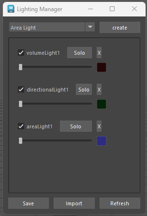

Light Manager
Info
- The light manager lets you save setups of lights so you can easily import them again in any project.
- By default saves a Json with the info of the Lights(type, position, rotation, color, intensity)by creating a folder in your Maya/. Overwrites data when using the same name for an existing saved setup.

The code
Uses Pymel to get the lights type and open Maya UI to make a dockable Window. Writes all the information about the lights in a Json file and read the file on import. The UI is made using PythonQt.You can find the source code on my GitHub